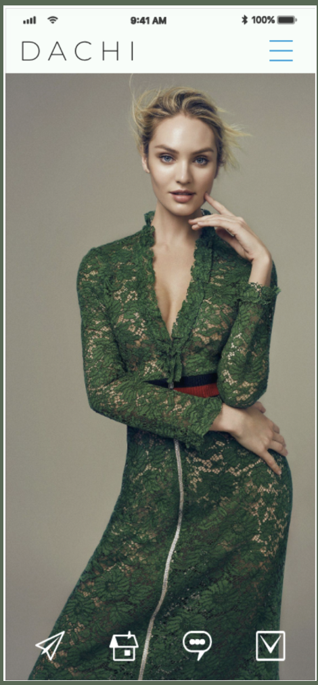
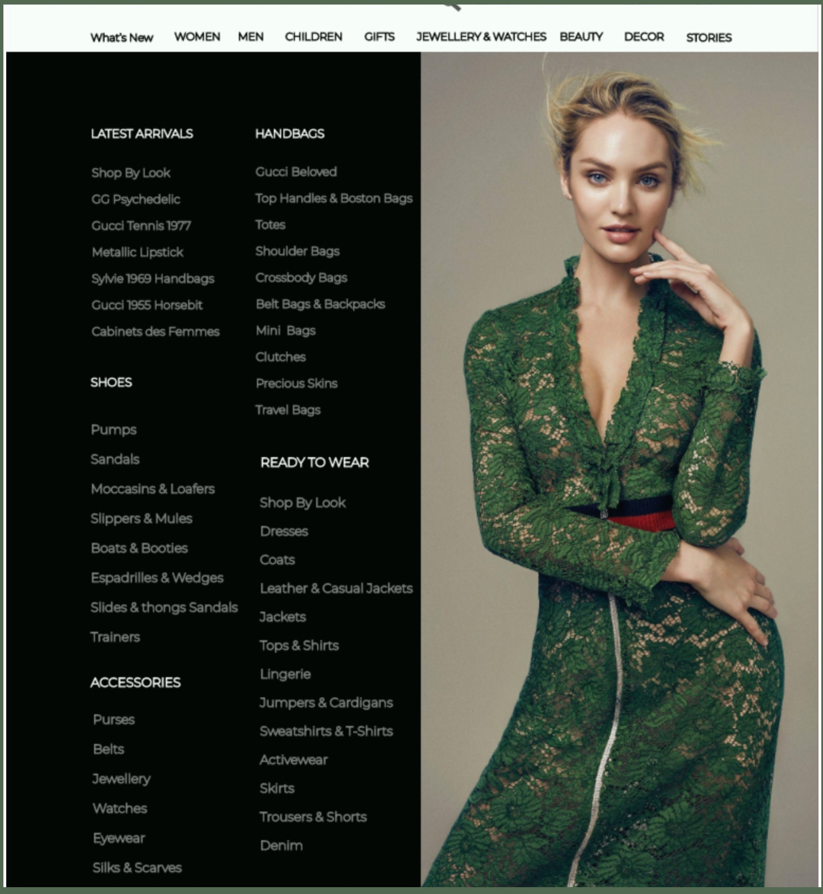
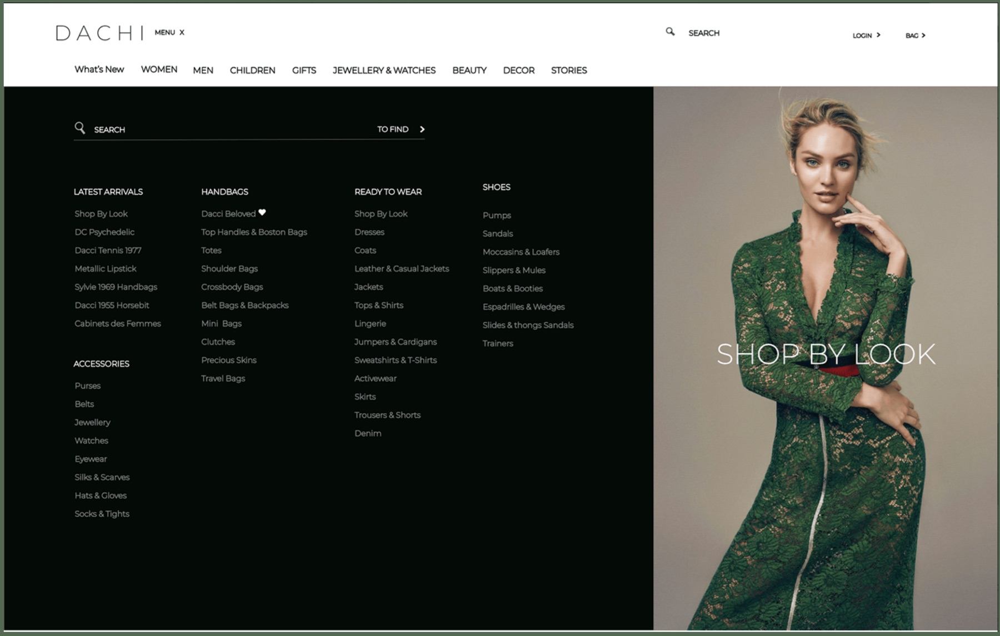
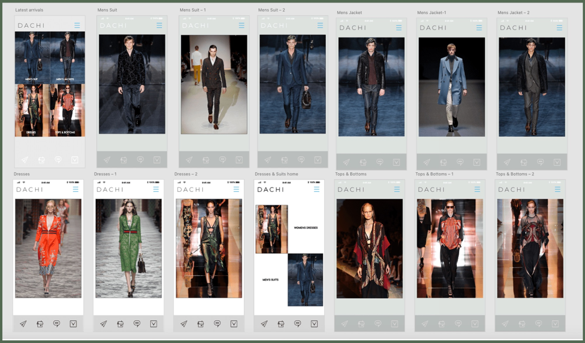

A working showcase of design features beyond the screen, from intricate workflows and data visualisations to interactive solutions, service design blueprints, and more. Each section explores a different method for making complex systems legible.
A comprehensive blueprint mapping the end-to-end synchronisation of customers, restaurants, and riders, the multi-stakeholder lifecycle that turns a single tap into national infrastructure.

Click the blueprint to view it full-screen. Four swim-lanes, Customer’s Journey · Front Stage · Back Stage · Supporting Process, are split by the Line of Visibility: above it, what the user sees; below it, the human actions and logistics that must stay in lock-step.
I developed this blueprint to visualise how a simple food order triggers a complex chain of backstage events.
By identifying the Line of Visibility, I mapped exactly where automated app responses (Front Stage) must align with human actions and third-party logistics (Back Stage), surfacing the operational blockers that standard screen-level design never sees.
One payment-success trigger simultaneously assigns a Rider, alerts the Restaurant, and starts the “Distance Algorithm” for an accurate delivery estimate.
Pinpointed where the App must act as the “bridge”, translating a Rider’s real-time GPS into a customer-facing “Arriving in Minutes” notification.
Mapped invisible processes, Recommendation Algorithms, Secure Payment Gateways, as the foundational infrastructure of a seamless experience.
Identified a 15% friction point in the Rider-to-Kitchen handoff by mapping back-stage support processes usually overlooked in UI design.
i don’t just design screens; i design the lines of visibility that make national infrastructure work
A strategic breakdown of the global remittance gap that informs my fintech logic, and the data foundation for Moyo.Exchange. The goal: use Service Design to bypass the “middleman” friction that keeps regional fees artificially high.
Global remittance costs fell from 9.3% in 2011 to a record-low 6.5% in 2020, but Sub-Saharan Africa remains an outlier with the highest transaction costs in the world.
Live interactive chart, hover any bar for exact figures. Chart: Dapo George · Source: World Bank · built with Datawrapper.
Average costs in Sub-Saharan Africa sit at 8.5%, nearly triple the 3.0% UN Sustainable Development Goal.
A 30% premium over the global average, a “tax on poverty” quietly draining millions from local economies.
Use Service Design to bypass the “middleman” friction points that keep these regional fees artificially high.
This data is the foundation for Moyo.Exchange, turning a market gap into a concrete product thesis.
an 8.5% fee isn’t a number, it’s a barrier. i design the systems that take it apart
A multi-platform study in adaptive visual hierarchy. The same luxury fashion brand re-flows across mobile, tablet, and desktop, each layout re-prioritising imagery, navigation, and density for its context, without ever losing the editorial tone.



Notice the adaptive hierarchy: on mobile the image leads and navigation collapses into a hamburger + thumb-friendly tab bar; on tablet the category menu unfolds beside the hero; on desktop, search and a full mega-menu take priority while the editorial image becomes a “shop by look” call-to-action.
Hamburger + bottom tab bar on mobile → unfolding category menu on tablet → persistent horizontal mega-menu on desktop.
The editorial hero is the whole screen on mobile, a paired panel on tablet, and a “shop by look” CTA on desktop.
Search is tucked away on mobile and promoted to a primary action as screen real estate grows.
Thin, wide-tracked wordmark and generous whitespace keep the luxury editorial feel intact at every breakpoint.
Behind the three breakpoints sits a complete mobile screen system, every category, look, and product state mapped as a connected flow.

Click either large image to inspect it full-screen.
every breakpoint is a new set of priorities, same brand, re-decided for the context